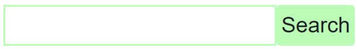
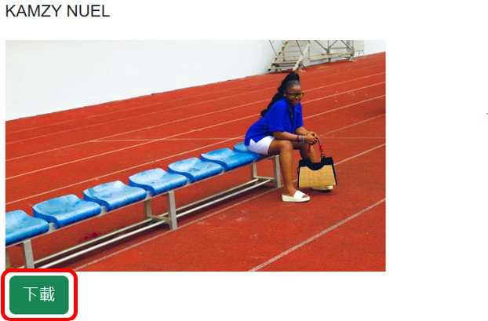

Project 8 - 照片搜尋網站
本專案使用React.js作為前端框架，並透過axios套件來實現AJAX透過API向第三方網站請求資料。
本專案的資料來源為Pexels網站，其網站中的照片皆為免費授權的。本專案向Pexels申請API Key後，跟據Pexels API規範來設定參數。例如: API URL中的頁數、每頁顯示照片數量等。
在網站中，使用者可以透過搜尋得到想要的照片，同時也可以下載想要的照片。


Github
前往網站